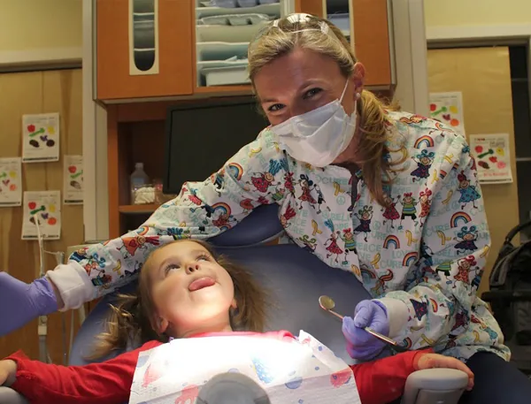
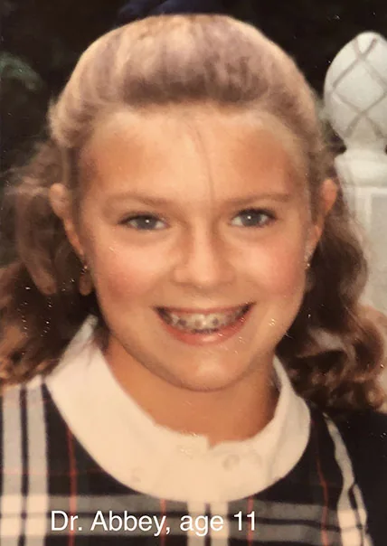

Pediatric dentistry for infants, children and teens
Dr. Abbey Sullivan Orozco and the team explain each step to your child in kid-friendly terms and focus on prevention.
- Pediatric dentistry
- (215) 220-3778
- First visit
- By age one
- Dr. Abbey
- Diplomate, ABPD

Pediatric dentistry topics
- First pediatric dental visitWhat happens at the first exam and what to bringBelow
- Dental care for your babyGums, the first tooth and the first toothbrushGuide
- Thumb suckingWhat is normal and when to ask for a checkGuide
- Sports dentistryMouthguards and what to do after a knockGuide
- Pediatric dental emergenciesCall (215) 220-3778 first, then read the practice’s guidanceGuide
From current website Topic list follows the practice’s “Pediatric Dentistry” menu. The guides stay on its site so the practice’s clinical wording is not repeated here.

Your child’s first visit. Four things happen, in this order.
- 1. HistoryThe team reviews your child’s dental and medical history.
- 2. ExamDr. Abbey counts the teeth and shows your child her mirror. Under age 3, a lap exam sits your child knee to knee with her.
- 3. CleaningA cleaning, fluoride and digital X-rays happen if they are needed.
- 4. PlanDr. Abbey writes an individual plan and answers your questions.
Bring your completed patient information form and your insurance card.
From current website Pending practice review From the practice’s First Pediatric Dental Visit page.

Dr. Abbey Sullivan Orozco. Pediatric dentist, DMD.

Dr. Abbey, pediatric dentist

Dr. Abbey, age 11
Dr. Abbey believes every child should get to experience a healthy smile, and she shows children that dentistry can be fun.
- Diplomate, American Board of Pediatric Dentistry
- Member, American Academy of Pediatric Dentistry
- Pediatric dental residency, Temple University Hospital
From current website Pending practice review Listed as stated on the practice’s website; not independently verified. The age-11 caption is printed on the photograph.
Dental emergencies
If your child hurts a tooth or has severe pain, call the office instead of sending a request: (215) 220-3778 for pediatric dentistry. For a life-threatening emergency, call 911.